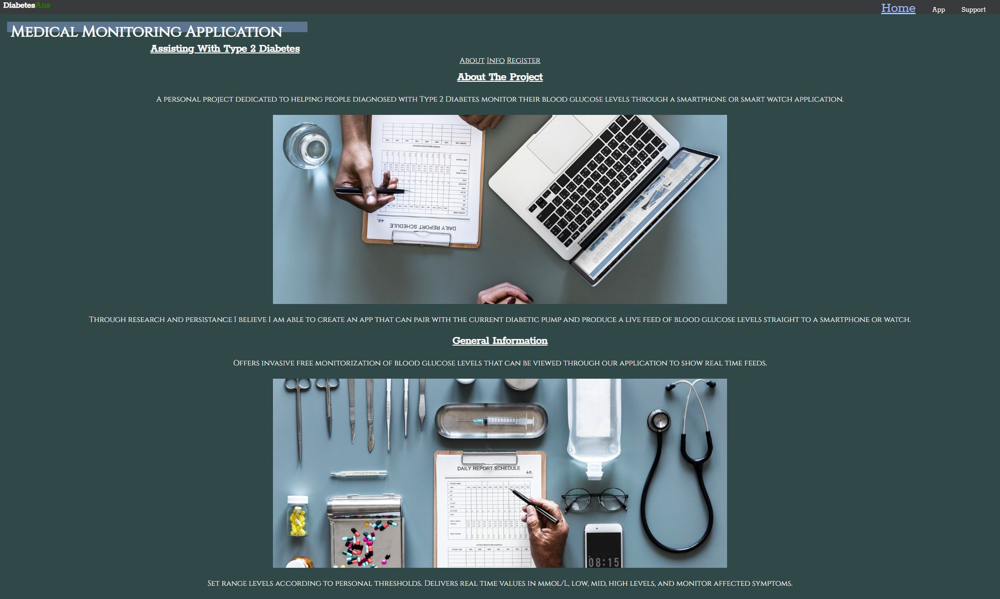
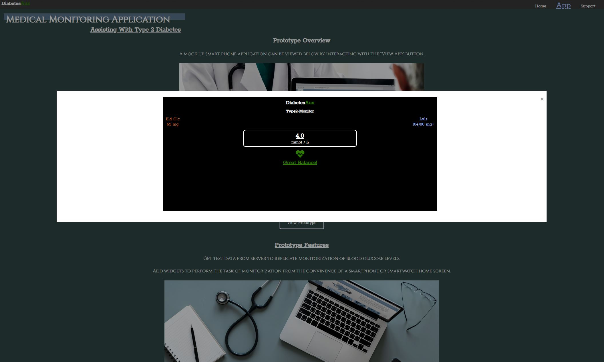
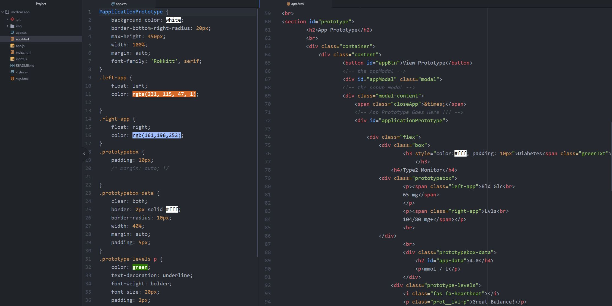
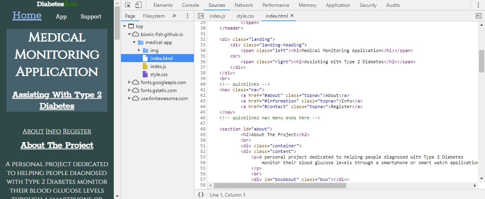

Medical Application
Overview
A mock up design for a medical website and accommodating application. This personal project was created to develop an understanding of JavaScript Modals to display the mock up application. And form validation via a sign up sheet. Developed to enhance current web technology programming skills, further my current JavaScript skillset and develop a better understanding of form validation.
This personal project was created for my younger sister who has type 2 Diabetes. I am hopeful that with continious self learning I will be able to produce a working app that can monitor blood glucose levels in real time without the need for invasive techniques.

The Problem
Watching my younger sister take blood measurements of gluscose levels before almost every meal made me want to develop an application. This application would suite all type 2 diabetics by running the app through a smartwatch to monitor statistical values of blood glucose in real time.
Wanting to eliminate the invasive procedure of having to prick ones finger and draw a sample of blood to measure if glucose levels are in the correct range. Also helping to monitor current ranges in real time to prevent

Design
Going for a sophisticated medical design view. I implemented the body with a dark colored background, with a pervailant white for the information text. The dark green/grey background paired well with the medical images found of unsplash. Giving the medical website a professional look and similar feel across multiple pages.
The design features a mobile view and a desktop view both with responsive elements up until the screen dimensions of 3440x1440. feature menus & header elements recieve additional properties on desktop view.

Development
An updated layout and remodel of a previous version of a cafe website. Developed using the latest semantic tags in HTML5. Mixed with current layout methodologies utilizing CSS.
Taking use of the display flex property in CSS to layout specific content depending on a users viewing device. Mock up created as a personal project to develop greater proficency in programming web technology languages.

Testing / Debugging
Testing takes place using multiple browsers to test compatibility. Lauching on both a local server for development and testing purposes, and creating live sites on github to test features.
Multiple devices are also used for testing to ensure there are specific media query breakpoints in place. This ensures a responsive design and layout across multiple browsers and devices.

Comments
Creating this website helped develop a better understanding of layout principals
through the use of CSS Flexbox techniques.
Provided an insight into color theory and principals. Dont over expand the color pallete,
use a primary, secondary, tertiary and an accent color.
color